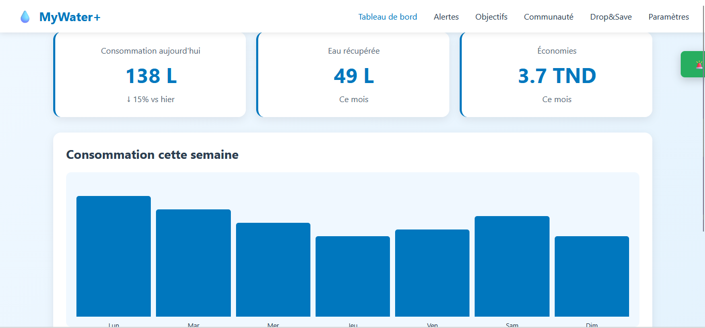
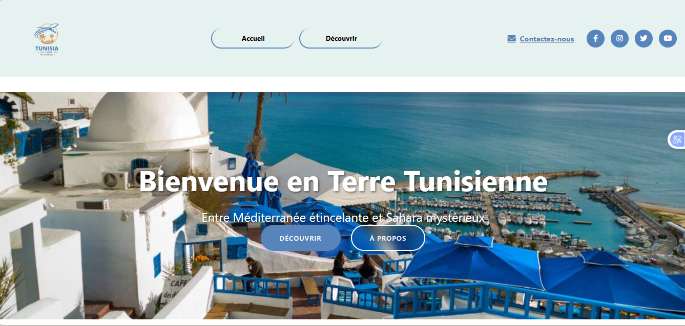
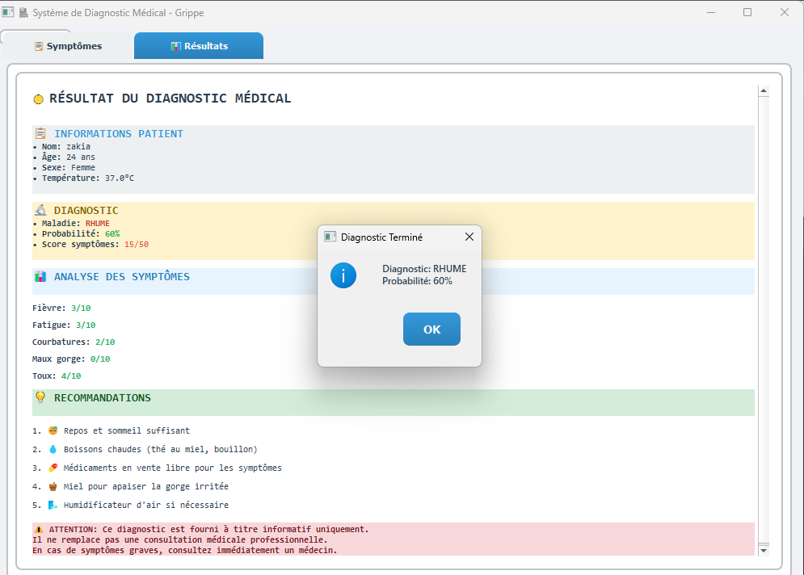
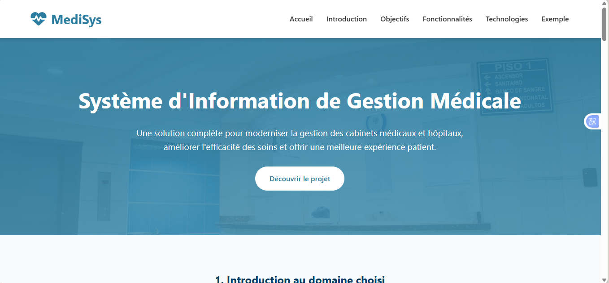
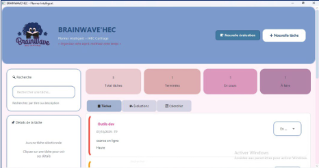
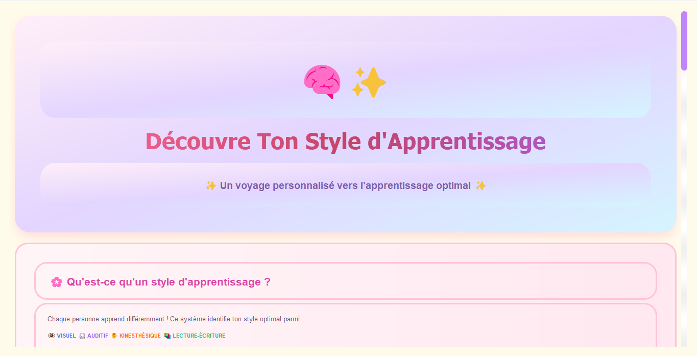

Project 1
MaYna+, un système intelligent qui aide chaque foyer à économiser
l’eau , à anticiper les coupures ,gérer l’eau intelligemment
et à réduire le gaspillage, tout en répondant à un besoin réel en Tunisie.see more....

Project 2
Site web interactif présentant la richesse touristique et culturelle de la Tunisie. Le projet inclut une carte interactive des gouvernorats, des pages détaillées pour chaque région (comme Kairouan), et une expérience utilisateur moderne avec design responsive.
see more....
see more....

Project 3
Application de diagnostic médical simplifié qui analyse les symptômes du patient et génère automatiquement une maladie probable, un score détaillé et des recommandations. Le système offre une interface claire, un rapport complet et un pop-up de confirmation du diagnostic.
see more....

Project 4
Système d'information médical complet pour cabinet/hôpital automatisant rendez-vous, dossiers patients, prescriptions et communications, améliorant l'efficacité des soins et l'expérience patient.
see more....

Project 5
Pépinière Feuille à Café, combine un café bio et une pépinière écologique dans un même espace
see more....

Project 6
une étude de cas de l'entreprise AquaNet sur les cyberattaque
see more....

Project 7
BrainWave'HEC un outil numérique simple, intuitif et adapté aux besoins académiques, permettant
aux étudiants de gérer efficacement leurs tâches, leurs deadlines et leurs priorités.see more....

Project 8
ON a exploré comment
l'intelligence artificielle peut aider à personnaliser
l'apprentissage en identifiant automatiquement le style
optimal de chaque personne..see more....